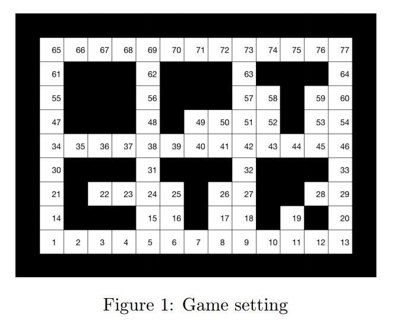

from IPython.display import clear_output
import numpy as np
import random
import time
import matplotlib.pyplot as plt
import matplotlib.patches as patches
#import keyboard #commented out as can currently not be used from Jupyter Notebook
%matplotlib inlineIntersection Policy in Pac-man’s grid world
Pac-man is an example of a pursuit-evasion game: the main player pac-man tries to evade a set of so-called ghosts, which are pursuing players. A very simplified version of this game is considered here where the aim is to compute a policy for a single ghost to pursue pac-man in a grid world.
The stage for the game is depicted in Figure 1 where 77 possible positions/cells for pac-man and for the ghost are considered. Both ghost and pac-man can only move to an adjacent cell (left, right, up down, while diagonal moves are not allowed) at each time step/iteration \(k \in \{1, 2, \ldots\}\) or stay in the same cell (e.g. if the current position is 65, then the next cell might be 65, 66 or 61, if the current cell is 38 then the next cell might be 38, 48, 39, 37, 31. The game ends when pac-man and ghost occupy the same cell or cross each other in a given move, i.e., at a given time \(k\) the move of the ghost is such that the next cell is the current position of the pac-man, and vice-versa. Run the following instruction with the functions provided to see the behavior of pac-man and ghost with some random policies.
playoptctrpacman([9 1]',[5 13]',2,1)
The first and second arguments of this function are vectors with the (y,x) coordinates of pac-man and ghost, respectively. The third and fourth arguments define the policies which should be used for the players. See more details about this function below.

In this live script, we find the intersection policy for the ghost assuming that the path taken by pac-man is periodic and known. Let \(s_{ghost} \in \{1, \ldots , 77 \}\), \(s_{pac} \in \{1, \ldots, 77\}\) denote the cell of the ghost and the cell of pac-man. The policy must be such that starting at any initial cell, the ghost intersects pac-man with the least number of time iterations. That is, the policy should provide the next cell of the ghost \(s_{next}\) along the path that intersects pac-man in the shortest amount of time. Again if this optimal path is not unique, then the output should be the cell with the smallest numerical label. The considered periodic motion of pac-man is an anti-clockwise trajectory along cells adjacent to the outer walls, i.e., if cell 1 corresponds to the initial pac-man position, one period of the trajectory corresponds to the cells \((1, 2, \ldots, 12, 13, 20, 29, 33, \ldots, 77, 76, \ldots, 65, 61, \ldots, 21, 14)\). However, the initial cell can be any of these cells.
The Matlab function intersectpol provided below finds the policy assuming that the path taken by pac-man is an anti-clockwise periodic trajectory along cells adjacent to the outer walls. The policy is calculated such that by starting at any initial cell, the ghost intersects with pac-man with the least number of iterations.
The inputs to the Matlab function are:
- sgho = \(s_{ghost} \in \{1, 2, \ldots, 12, 13, 20, 29, 33, \ldots, 77, 76, \ldots, 65, 61, \ldots, 21, 14\}\) representing the cell of the ghost;
- spac = \(s_{pac} \in \{1, \ldots, 77\}\)representing the cell of the pac-man
The output is nextstate = \(s_{next}\) which is the first state of the ghost along the optimal path connecting \(s_{ghost}\) to \(s_{pac}\). If this optimal path is not unique, then the output should be the state cell with the smallest numerical label.
The MATLAB implementation is given next. The next function relies on the stochastic dynamic programming algorithm to compute a matrix that provides the next state for the ghost to move given the cell numbers of the ghost (row) and of pac-man (column). Although the current problem is deterministic, one can model the trajectory of pac-man as a ‘disturbance’ that occurs at each state with probability one.
def intersecpolMatrix():
States = np.array([[1, 2, 3, 4, 5, 6, 7, 8, 9, 10, 11, 12, 13],
[14, np.inf, np.inf, np.inf, 15, 16, np.inf, 17, 18, np.inf, 19, np.inf, 20],
[21, np.inf, 22, 23, 24, 25, np.inf, 26, 27, np.inf, np.inf, 28, 29],
[30, np.inf, np.inf, np.inf, 31, np.inf, np.inf, np.inf, 32, np.inf, np.inf, np.inf, 33],
[34, 35, 36, 37, 38, 39, 40, 41, 42, 43, 44, 45, 46],
[47, np.inf, np.inf, np.inf, 48, np.inf, 49, 50, 51, 52, np.inf, 53, 54],
[55, np.inf, np.inf, np.inf, 56, np.inf, np.inf, np.inf, 57, 58, np.inf, 59, 60],
[61, np.inf, np.inf, np.inf, 62, np.inf, np.inf, np.inf, 63, np.inf, np.inf, np.inf, 64],
[65, 66, 67, 68, 69, 70, 71, 72, 73, 74, 75, 76, 77]])
statesDim = States.shape
n1 = statesDim[0]
n2 = statesDim[1]
States2PosM = States2Pos(States)
[Graph, Neighboursgho] = States2Graph(States)
L = int(np.max(States[States != np.inf]))
# Neighbours of pac - next state along periodic motion
statespermotion = np.concatenate([States[0, :], States[1:-1, n2 - 1], States[n1 - 1, -1::-1], States[-2:0:-1, 0]])
Lpac = len(statespermotion)
Neighbourspac = [[] for _ in range(int(max(statespermotion)))]
for i in range(len(statespermotion)):
Neighbourspac[int(statespermotion[i]) - 1] = statespermotion[int(np.remainder(i + 1, len(statespermotion)))]
M = [None] * L * Lpac
C = [None] * L * Lpac
P = [None] * L * Lpac
Jh = np.zeros(L * Lpac)
for i in range(Lpac): #pac
for j in range(L): #gho
overallstate = pacgho2state(i + 1, j + 1, L)
ngho = Neighboursgho[j]
npac = [Neighbourspac[int(statespermotion[i]) - 1]]
# Loop to preallocate
M[overallstate - 1] = [None] * len(ngho)
C[overallstate - 1] = [None] * len(ngho)
P[overallstate - 1] = [None] * len(ngho)
for iPreall in range(len(ngho)):
M[overallstate - 1][iPreall] = [None] * len(np.atleast_1d(npac))
C[overallstate - 1][iPreall] = [None] * len(np.atleast_1d(npac))
P[overallstate - 1][iPreall] = [None] * len(np.atleast_1d(npac))
for ind1 in range(len(np.atleast_1d(npac))):
for ind2 in range(len(np.atleast_1d(ngho))):
nextstate = pacgho2state(np.where(statespermotion == npac[ind1])[0][0] + 1, ngho[ind2], L)
if j == statespermotion[i] - 1: # terminal state
M[overallstate - 1][ind2][ind1] = overallstate
C[overallstate - 1][ind2][ind1] = 0
P[overallstate - 1][ind2][ind1] = 1
else:
if npac[ind1] == i: # stay in the same node
C[overallstate - 1][ind2][ind1] = 0
else:
C[overallstate - 1][ind2][ind1] = 1
M[overallstate - 1][ind2][ind1] = nextstate
P[overallstate - 1][ind2][ind1] = 1
if j == statespermotion[i] - 1:
Jh[overallstate - 1] = 0
else:
Jh[overallstate - 1] = np.inf
# call stochastic dp routine, see live script for a description of this function
# 'Inventory Control and the stochastic dynamic programming algorithm'
# although the current function contains some adjustments in the 2nd output
# argument
h = 100
[J_, nextstate] = stochDP(M, C, P, Jh, h)
P_ = np.zeros([L, L])
for i in range(Lpac): # pac
for j in range(L): # gho
overallstate = pacgho2state(i + 1, j + 1, L)
stategho_ = np.zeros(len(nextstate[overallstate - 1][0]))
for ell in range(len(nextstate[overallstate - 1][0])):
[statepac, stategho_[ell]] = state2pacgho(nextstate[overallstate - 1][0][ell], L)
stategho_2 = np.sort(stategho_)
P_[j][int(statespermotion[i]) - 1] = stategho_2[0]
return P_Inverse operation of previous function: given a state of the DP formualtion, compute the cells of pac-man and ghost.
def pacgho2state(statepac, stategho, ngho):
overallstate = stategho + ngho * (statepac - 1)
return overallstateGiven the cells of pac-man and ghost, compute the state of a reformulated problem such that if fits the standard DP framework.
def state2pacgho(overallstate, ngho):
statepac = np.floor(overallstate / ngho) + 1
stategho = np.mod(overallstate - 1, ngho) + 1
return [statepac, stategho]The next function is an auxiliary function. Given a matrix with states corresponding to each entry (i,j) it provides:(i) adjacency graph with cost 1 if i and j are neighbours. (ii) cell vector Neighbours{i} with neighbours that are not a wall;
def States2Graph(States):
statesDim = States.shape
n1 = statesDim[0]
n2 = statesDim[1]
vec1 = np.arange(1, n1 + 1)
vec2 = np.arange(1, n2 + 1)
L = int(max(States[States != np.inf]))
M = np.zeros((L, 2))
Neighbours = [None] * L
for i in range(n1):
for j in range(n2):
if States[i, j] != np.inf:
if j != 0 and j != n2 - 1 and i != 0 and i != n1 - 1:
possibleNeighboors = np.array(
[States[i + 1, j], States[i, j + 1], States[i, j], States[i, j - 1], States[i - 1, j]])
Neighbours[int(States[i, j]) - 1] = possibleNeighboors[possibleNeighboors != np.inf]
if i == 0 and j != n2 - 1 and j != 0:
possibleNeighboors = np.array([States[i + 1, j], States[i, j + 1], States[i, j], States[i, j - 1]])
Neighbours[int(States[i, j]) - 1] = possibleNeighboors[possibleNeighboors != np.inf]
if i == n1 - 1 and j != 0 and j != n2 - 1:
possibleNeighboors = np.array([States[i, j + 1], States[i, j], States[i, j - 1], States[i - 1, j]])
Neighbours[int(States[i, j]) - 1] = possibleNeighboors[possibleNeighboors != np.inf]
if j == 0 and i != 0 and i != n1 - 1:
possibleNeighboors = np.array([States[i + 1, j], States[i, j + 1], States[i, j], States[i - 1, j]])
Neighbours[int(States[i, j]) - 1] = possibleNeighboors[possibleNeighboors != np.inf]
if j == n2 - 1 and i != 0 and i != n1 - 1:
possibleNeighboors = np.array([States[i + 1, j], States[i, j], States[i, j - 1], States[i - 1, j]])
Neighbours[int(States[i, j]) - 1] = possibleNeighboors[possibleNeighboors != np.inf]
# corner (1,1)
possibleNeighboors = np.array([States[0, 0], States[0, 1], States[1, 0]])
Neighbours[int(States[0, 0]) - 1] = possibleNeighboors[possibleNeighboors != np.inf]
# corner (n1,n2)
possibleNeighboors = np.array([States[n1 - 1, n2 - 1], States[n1 - 2, n2 - 1], States[n1 - 1, n2 - 2]])
Neighbours[int(States[n1 - 1, n2 - 1]) - 1] = possibleNeighboors[possibleNeighboors != np.inf]
# corner (n1,1)
possibleNeighboors = np.array([States[n1 - 1, 0], States[n1 - 2, 0], States[n1 - 1, 1]])
Neighbours[int(States[n1 - 1, 0]) - 1] = possibleNeighboors[possibleNeighboors != np.inf]
# corner (1,n2)
possibleNeighboors = np.array([States[0, n2 - 1], States[0, n2 - 2], States[1, n2 - 1]])
Neighbours[int(States[0, n2 - 1]) - 1] = possibleNeighboors[possibleNeighboors != np.inf]
n = len(Neighbours)
Graph = np.inf * np.ones([n, n])
for i in range(n):
for j in range(len(Neighbours[i])):
Graph[i, int(Neighbours[i][j]) - 1] = 1
return [Graph, Neighbours]The next function is an auxiliary function that provides the coordinates of each cell labeled with a number different from infinity, given the States matrix. Each row i of M contains the (x,y) coordinates.
def States2Pos(States):
statesDim = States.shape
n1 = statesDim[0]
n2 = statesDim[1]
vec1 = np.arange(1, n1 + 1)
vec2 = np.arange(1, n2 + 1)
L = int(max(States[States != np.inf]))
M = np.zeros((L, 2))
for i in range(L):
temp1 = vec1[(np.sum(States == (i + 1), axis=1)) >= 1]
temp2 = vec2[(np.sum(States == (i + 1), axis=0)) >= 1]
M[i, 0:2] = np.concatenate((temp1, temp2))
return MThe next function is a general function to compute an optimal stochastic dynamic programming policy. The explanation is omitted here, see A_2_stochasticinventorycontrol.ipynb.
def stochDP(M, C, P, Jh, h):
n = len(M) # statedimension
J = Jh
J_ = np.zeros([n, h])
u_ = []
nextstate = []
for k in range(h - 1, -1, -1):
for i in range(n):
if k == h - 1:
u_.append([[] for _ in range(h)])
nextstate.append([[] for _ in range(h)])
nj = len(M[i])
caux = np.zeros(nj)
for j in range(nj):
caux[j] = 0
for l in range(len(M[i][j])):
caux[j] = caux[j] + P[i][j][l] * (C[i][j][l] + J[int(M[i][j][l]) - 1])
a = np.sort(caux)
b = np.argsort(caux)
J_[i, k] = a[0]
u_[i][k] = [None]
nextstate[i][k] = [None]
u_[i][k][0] = b[0]
nextstate[i][k][0] = M[i][u_[i][k][0]][0]
for ell in range(1, len(a)):
if np.isinf(a[ell]) or np.isinf(a[0]):
break
if abs(a[ell] - a[0]) < 1e-8:
u_[i][k].append(b[ell])
nextstate[i][k].append(M[i][u_[i][k][ell]][0])
else:
break
J = J_[:, k]
return [J_, nextstate]def drawPacMan(x,y,ax):
posxy = np.column_stack([[-0.4, -0.4, 0.4, 0, 0.4],[-0.4, 0.4, 0.4, 0, -0.4]]) + np.array([x,y])
Hpac = patches.Polygon(posxy, closed=True,facecolor='y')
ax.add_patch(Hpac)
def drawGhost(x,y,ax):
posxy = np.column_stack([[-0.4, -0.4, 0.4, 0.4, 0.2, 0, -0.2],[-0.4, 0.4, 0.4, -0.4, -0.1, -0.4, -0.1]]) + np.array([x,y])
Hgho = patches.Polygon( posxy, closed=True, facecolor='r')
ax.add_patch(Hgho)
posxyeyel = np.column_stack(np.array([[-0.05, -0.05, 0.05, 0.05], [-0.05, 0.05, 0.05, -0.05]])) + np.array([-0.1, 0.25])+np.array([x,y])
Hghoeyel = patches.Polygon(posxyeyel,facecolor='w')
ax.add_patch(Hghoeyel)
posxyeyer = np.column_stack(np.array([[-0.05, -0.05, 0.05, 0.05], [-0.05, 0.05, 0.05, -0.05]])) + np.array([0.1, 0.25])+np.array([x,y])
Hghoeyer = patches.Polygon(posxyeyer, facecolor='w')
ax.add_patch(Hghoeyer)
def live_plot(States, xPac, yPac,xGho, yGho):
f, ax = plt.subplots(1)
clear_output(wait=True)
drawbackground(States, f, ax)
drawPacMan(xPac,yPac,ax)
drawGhost(xGho, yGho, ax)
ax.set_xlim(-2, 16)
ax.set_ylim(-2, 12)
plt.show()The next function is the main function to play the optimal control pacman game, for an example call
playoptctrpacman([9 1]',[1 13]',1,1)The inputs are * p0pac - initial position packman, e.g. [9 1]’ * p0gho - initial position ghost, e.g., [1 13]’ * polgho - policy ghost 1 intersect policy, 2 purely stochastic * polpac - policy packman 1 biased stochastic, 2 periodic motion, 3 user input,
def playoptctrpacman(p0pac, p0gho, polgho, polpac):
# define states -----------------------------------------------------------
# |
# i,x \in {1,...,n1=9}|
# |_____________
# j,z \in {1,...,n2=13}
States = np.array([[1, 2, 3, 4, 5, 6, 7, 8, 9, 10, 11, 12, 13],
[14, np.inf, np.inf, np.inf, 15, 16, np.inf, 17, 18, np.inf, 19, np.inf, 20],
[21, np.inf, 22, 23, 24, 25, np.inf, 26, 27, np.inf, np.inf, 28, 29],
[30, np.inf, np.inf, np.inf, 31, np.inf, np.inf, np.inf, 32, np.inf, np.inf, np.inf, 33],
[34, 35, 36, 37, 38, 39, 40, 41, 42, 43, 44, 45, 46],
[47, np.inf, np.inf, np.inf, 48, np.inf, 49, 50, 51, 52, np.inf, 53, 54],
[55, np.inf, np.inf, np.inf, 56, np.inf, np.inf, np.inf, 57, 58, np.inf, 59, 60],
[61, np.inf, np.inf, np.inf, 62, np.inf, np.inf, np.inf, 63, np.inf, np.inf, np.inf, 64],
[65, 66, 67, 68, 69, 70, 71, 72, 73, 74, 75, 76, 77]])
statesDim = States.shape
n1 = statesDim[0]
n2 = statesDim[1]
States2PosM = States2Pos(States)
[Graph, Neighboors] = States2Graph(States)
# -------------------------------------------------------------------------
# draw background and players----------------------------------------------
# View Starting point.
live_plot(States, p0pac[0][0], p0pac[1][0],p0gho[0][0], p0gho[1][0])
# policy matrix for stochastic dp policy
PolMatrix = intersecpolMatrix()
ppac = p0pac
pgho = p0gho
h = 8
k = 1
indm = 1
while True:
if k > 1 and np.linalg.norm(ppac[:, k - 1] - pgho[:, k - 2]) == 0 and np.linalg.norm(
pgho[:, k - 1] - ppac[:, k - 2]) == 0:
break
xyP = np.array([ppac[1, k - 1], ppac[0, k - 1]])
xyG = np.array([pgho[1, k - 1], pgho[0, k - 1]])
if np.linalg.norm(pgho[:, k - 1] - ppac[:, k - 1]) == 0:
break
live_plot(States, xyP[0], xyP[1],xyG[0], xyG[1])
# iterate
# ghost
sgho = States[int(pgho[0, k - 1]) - 1, int(pgho[1, k - 1]) - 1]
spac = States[int(ppac[0, k - 1]) - 1, int(ppac[1, k - 1]) - 1]
if polgho == 1:
nextstate = PolMatrix[int(sgho) - 1, int(spac) - 1]
elif polgho == 2:
nextstate = randompolicy(sgho, Neighboors)
pgho = np.append(pgho, np.transpose(States2PosM[[int(nextstate) - 1], :]), axis=1)
# pacman
if polpac == 1:
states2PosMInput = randompolicybiased(States[int(ppac[0, k - 1]) - 1, int(ppac[1, k - 1]) - 1], Neighboors,
States, States2PosM)
ppac = np.append(ppac, np.transpose(States2PosM[[int(states2PosMInput) - 1], :]), axis=1)
elif polpac == 2:
periodicMotionOutput = periodicmotion(ppac[:, [k - 1]], n1, n2)
ppac = np.append(ppac, periodicMotionOutput, axis=1)
elif polpac == 3:
p = keyboard.read_key()
# test if possible first to add offset, otherwise do not move
if p == 'left':
if ppac[1, k - 1] != 1 and States[ppac[0, k - 1] - 1, ppac[1, k - 1] - 2] != np.inf:
ppac = np.append(ppac, ppac[:, [k - 1]] + np.array([[0], [-1]]), axis=1)
else:
ppac = np.append(ppac, ppac[:, [k - 1]], axis=1)
elif p == 'right':
if ppac[1, k - 1] != n2 and States[ppac[0, k - 1] - 1, ppac[1, k - 1]] != np.inf:
ppac = np.append(ppac, ppac[:, [k - 1]] + np.array([[0], [1]]), axis=1)
else:
ppac = np.append(ppac, ppac[:, [k - 1]], axis=1)
elif p == 'up':
if ppac[0, k - 1] != n1 and States[ppac[0, k - 1], ppac[1, k - 1] - 1] != np.inf:
ppac = np.append(ppac, ppac[:, [k - 1]] + np.array([[1], [0]]), axis=1)
else:
ppac = np.append(ppac, ppac[:, [k - 1]], axis=1)
elif p == 'down':
if ppac[0, k - 1] != 1 and States[ppac[0, k - 1] - 2, ppac[1, k - 1] - 1] != np.inf:
ppac = np.append(ppac, ppac[:, [k - 1]] + np.array([[-1], [0]]), axis=1)
else:
ppac = np.append(ppac, ppac[:, [k - 1]], axis=1)
else:
ppac = np.append(ppac, ppac[:, [k - 1]], axis=1)
k = k + 1
live_plot(States, xyP[0], xyP[1],xyG[0], xyG[1])The next function draws the background given a matrix with states corresponding to each entry (i,j) (entry with inf means obstacle).
def drawbackground(States, f, ax):
plotrectangle(-0.5, -0.5, 1, 10, ax)
plotrectangle(13.5, -0.5, 1, 10, ax)
plotrectangle(-0.5, -0.5, 14, 1, ax)
plotrectangle(-0.5, 9.5, 15, 1, ax)
for i in range(9):
for j in range(13):
plotsquare(j + 0.5, i + 0.5, ax)
if States[i, j] != np.inf:
plt.text(j + 0.7, i + 0.7, "%.0f" % States[i, j])
# O
plotrectangle(1.5, 5.5, 3, 3, ax)
# P
plotrectangle(5.5, 5.5, 1, 3, ax)
plotrectangle(7.5, 6.5, 1, 2, ax)
plotrectangle(6.5, 6.5, 1, 2, ax)
# T top
plotrectangle(10.5, 5.5, 1, 3, ax)
plotrectangle(9.5, 7.5, 1, 1, ax)
plotrectangle(11.5, 7.5, 1, 1, ax)
# C
plotrectangle(1.5, 1.5, 1, 3, ax)
# plotrectangle(3.5,1.5,1,3,ax)
plotrectangle(2.5, 1.5, 2, 1, ax)
plotrectangle(2.5, 3.5, 2, 1, ax)
# T bottom
plotrectangle(6.5, 1.5, 1, 3, ax)
plotrectangle(5.5, 3.5, 1, 1, ax)
plotrectangle(7.5, 3.5, 1, 1, ax)
plotrectangle(9.5, 1.5, 1, 3, ax)
plotrectangle(10.5, 2.5, 1, 2, ax)
plotrectangle(11.5, 1.5, 1, 1, ax)
plotrectangle(11.5, 3.5, 1, 1, ax)
return [ax, f]
def plotrectangle(l, r, ll, lr, ax):
rect = patches.Rectangle((l, r), ll, lr, facecolor='k')
ax.add_patch(rect)
def plotsquare(l, r, ax):
rect = patches.Rectangle((l, r), 1, 1, facecolor='w', edgecolor='k')
ax.add_patch(rect)The next function is used to general the random policy by simply picking a random neighbour with equal probability
def randompolicy(currentstate, Neighbours):
n = len(Neighbours[int(currentstate) - 1])
nextstate = Neighbours[int(currentstate) - 1][int(np.floor(random.uniform(0, 1) * n + 1)) - 1]
return nextstateThe next function is used to general a biased random policy. If it is possible to go right, do go right with probability 0.5 otherwise pick another random neighbour with equal probability
def randompolicybiased(currentstate, Neighbours, States, States2PosM):
statesDim = States.shape
n1 = statesDim[0]
n2 = statesDim[1]
if States2PosM[int(currentstate) - 1, 1] == n2 or States[
int(States2PosM[int(currentstate) - 1, 0]) - 1, int(States2PosM[int(currentstate) - 1, 1])] == np.inf:
n = len(Neighbours[int(currentstate) - 1])
nextstate = Neighbours[int(currentstate) - 1][int(np.floor(random.uniform(0, 1) * n + 1)) - 1]
else:
rightneighboor = States[
int(States2PosM[int(currentstate) - 1, 0] - 1), int(States2PosM[int(currentstate) - 1, 1] + 1 - 1)]
if 1 < 0.5:
nextstate = rightneighboor
else:
Neighbours[int(currentstate) - 1] = Neighbours[int(currentstate) - 1][
Neighbours[int(currentstate) - 1] != rightneighboor]
n = len(Neighbours[int(currentstate) - 1])
nextstate = Neighbours[int(currentstate) - 1][int(np.floor(random.uniform(0, 1) * n + 1)) - 1]
return nextstateThe next function provides the next cell number given the previous cell number of the periodic motion strategy described above for the pac-man.
def periodicmotion(ppac, n1, n2):
if ppac[0] == 1 and ppac[1] != n2: # right
ppac[1] = ppac[1] + 1
else:
if ppac[0] == n1 and ppac[1] != 1: # left
ppac[1] = ppac[1] - 1
else:
if ppac[1] == 1 and ppac[0] != 1: # down
ppac[0] = ppac[0] - 1
else:
if ppac[1] == n2 and ppac[0] != n1: # up
ppac[0] = ppac[0] + 1
return ppacplayoptctrpacman(np.array([[9], [1]]), np.array([[5], [13]]), 1, 2)